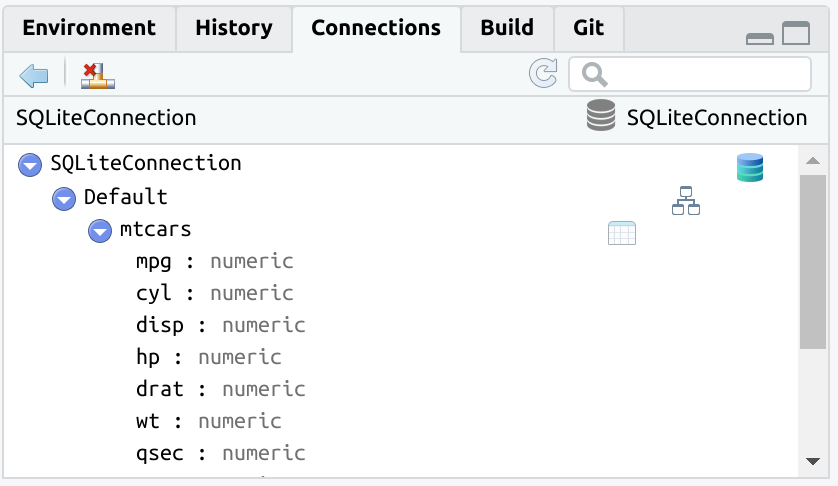
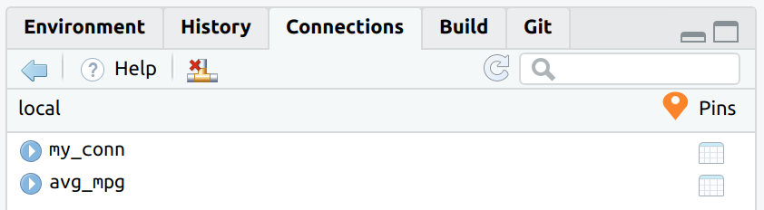
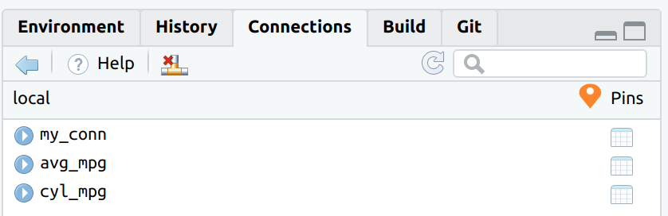

The main goal of connections is to integrate DBI-compliant packages with the RStudio IDE’s Connection Pane. Packages such as RPostgres, RSQLite, RMariaDB and bigrquery connect R to those databases, but do not provide a direct integration with the Connections Pane. connections reads the configuration of the connection and creates the integration with RStudio.
A second goal is to provide integration with the pins package. The connections package allows you to pin database connections and dplyr table objects.
A third goal of connections is to provide a simpler API to the way RStudio Connections pane integrates with R. This is meant for use by advanced R developers who wish to create custom connection configurations, or for DBI-compliant package developers who wish to directly integrate the Connections pane with their package.
Installation
Install the development version from GitHub with:
Using
The two main functions added by connections are:
-
connection_open()- Opens the database connection. Use instead ofdbConnect(), but use the exact same arguments. It also automatically starts the Connections pane. -
connection_close()- Closes the database connection.

The connection can now be closed by using the appropriate button in the Connections pane, or by using connection_close()

The connection code is parsed when connecting to the database, and it is visible once the connection is closed.
dplyr
connections integrates with dplyr by supporting the following two functions:
-
tbl()- To create a pointer to a table or view within the database. -
copy_to()- To copy data from the R session to the database.
The version of copy_to() inside connections automatically updates the Connections pane, so the new table automatically shows up.
con <- connection_open(SQLite(), "local.sqlite")
copy_to(con, mtcars, temporary = FALSE, overwrite = TRUE)
#> # Source: table<mtcars> [?? x 11]
#> # Database: sqlite 3.29.0 [/home/edgar/connections/local.sqlite]
#> mpg cyl disp hp drat wt qsec vs am gear carb
#> <dbl> <dbl> <dbl> <dbl> <dbl> <dbl> <dbl> <dbl> <dbl> <dbl> <dbl>
#> 1 21 6 160 110 3.9 2.62 16.5 0 1 4 4
#> 2 21 6 160 110 3.9 2.88 17.0 0 1 4 4
#> 3 22.8 4 108 93 3.85 2.32 18.6 1 1 4 1
#> 4 21.4 6 258 110 3.08 3.22 19.4 1 0 3 1
#> 5 18.7 8 360 175 3.15 3.44 17.0 0 0 3 2
#> 6 18.1 6 225 105 2.76 3.46 20.2 1 0 3 1
#> 7 14.3 8 360 245 3.21 3.57 15.8 0 0 3 4
#> 8 24.4 4 147. 62 3.69 3.19 20 1 0 4 2
#> 9 22.8 4 141. 95 3.92 3.15 22.9 1 0 4 2
#> 10 19.2 6 168. 123 3.92 3.44 18.3 1 0 4 4
#> # … with more rowsTo use an existing table inside the database use tbl().

The tbl() function opens the rest of the already available dplyr database integration.
pins
The connections package integrates with pins. It enables the ability to save and retrieve connections and queries.
Pin a connection
Use the same pin() command to save a database connection. Under the hood, connections saves the necessary information to recreate the connection code, not the actual connection R object.

Use pin_get() to re-open the connection. In effect, pin_get() will replay the exact same code used to initially connect to the database. This means that connection_open() is already called for you, so the Connections pane should automatically start up.
Assign the output of pin_get() to a variable, such as con. The variable will work just like any connection variable.
Pin a dplyr database query
When dplyr works with database data, the resulting query is not executed until the data is explicitly collected into R, or when printing the top results to the R Console. The pin records two things:
- The
dplyrR object that contains all of the transformations. It does not save the actual results. - The necessary information to recreate the database connection. This is to make sure that the data is being retrieved from the original database connection.

pin_get() will connect to the database, and return the dplyr object. Without assigning it to a variable, the pin will immediately print the results of the database. Those results are being processed at the time pin_get() runs.
Full pins example
The way pins integrates with databases, via the connections package, allows to open the connection from a pin, and pipe all of the subsequent code into a new pin. Afterwards, that pin can be used to collect or to continue using the dplyr object.
pin_get("my_conn", board = "local") %>%
tbl("mtcars") %>%
group_by(cyl) %>%
summarise(avg_mpg = mean(mpg, na.rm = TRUE)) %>%
pin("cyl_mpg", board = "local")
pin_get("cyl_mpg", board = "local")
#> # Source: lazy query [?? x 2]
#> # Database: sqlite 3.29.0 [/home/edgar/connections/local.sqlite]
#> cyl avg_mpg
#> <dbl> <dbl>
#> 1 4 26.7
#> 2 6 19.7
#> 3 8 15.1